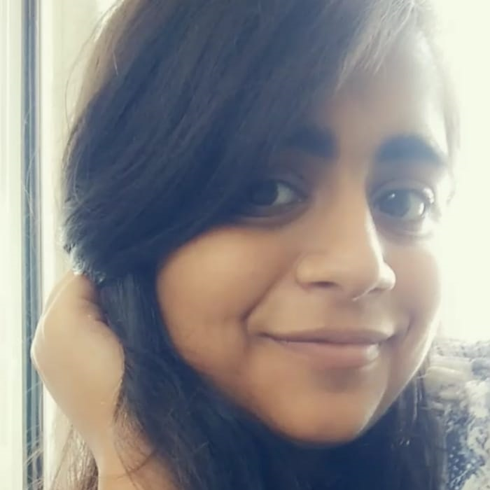
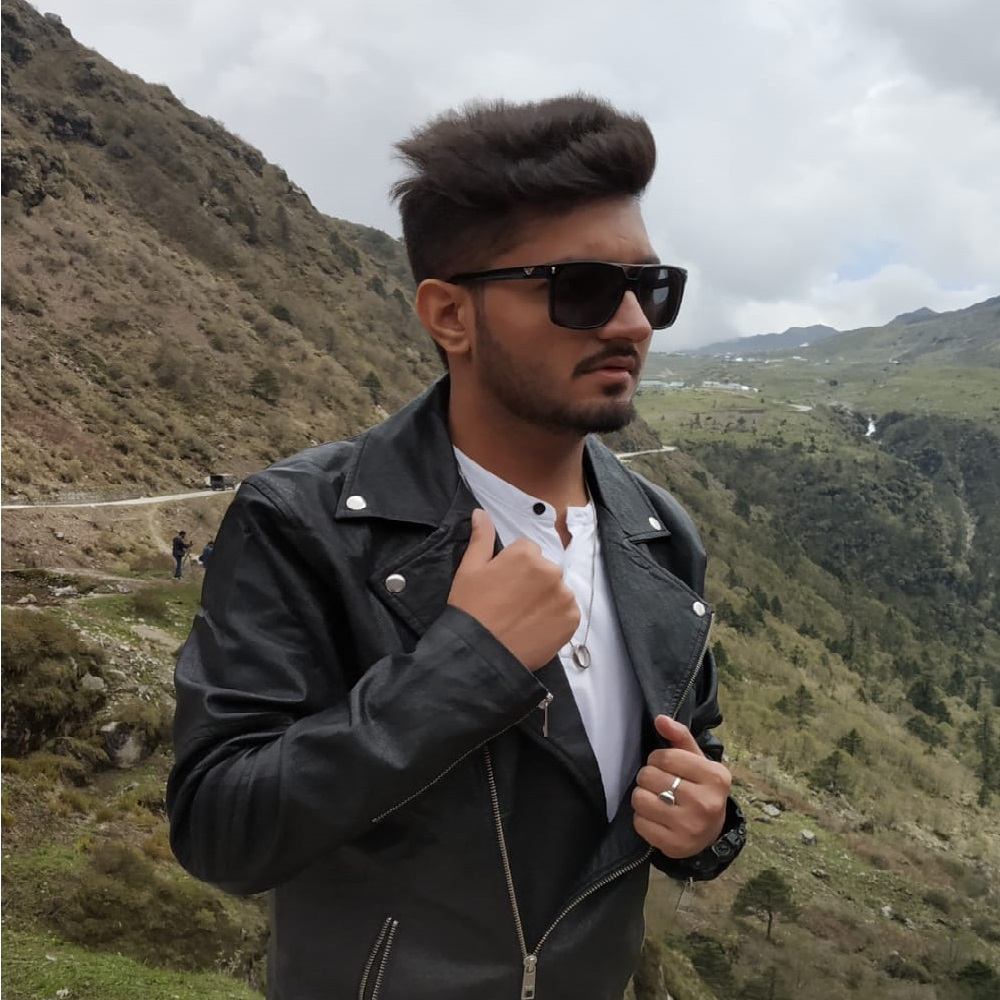

About us
IWSC AT MSI-T has been branded as MSI-T UNFILTERED. It's been a great success because in just 1 month of our existence we have got 500+ followers and everyone in the college knows about us. We've organised our own events like treasure hunt,been a part of donation drive. Also sponsored other events being their media and marketing partners. IWSC MSI-T team has a mix of technical,creative and extraordinary members who plan to take MSI-T UNFILTERED to unseen heights.

Prerna Mehta
Team Lead

Tanishq Rana
Team Lead